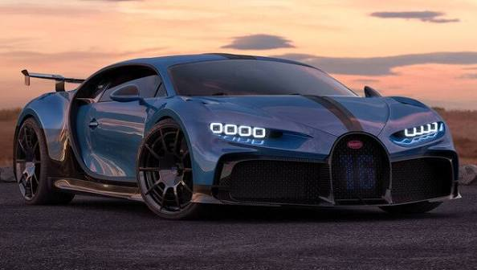
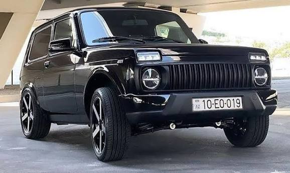

Гиперкар, представленный в марте 2016 года на Женевском автосалоне. Автомобиль производится в Молсайме (Франция) и считается преемником Bugatti Veyron.
Под капотом установлен 8-литровый двигатель W16 с четырьмя турбонагнетателями мощностью около 1500 л.с. Разгон до 100 км/ч занимает менее 2,5 секунды.
Выпуск ограничен: планировалось построить 500 экземпляров. Электронный ограничитель скорости настроен на 420 км/ч.

Внедорожник ВАЗ-2121 «Нива» выпускается с 1977 года. Это один из первых серийных легковых автомобилей с несущим кузовом и постоянным полным приводом.
Автомобиль известен проходимостью, простотой конструкции и ремонтопригодностью. Модель выпускается до сих пор и является одним из самых долгоживущих автомобилей в мире.
Сайт посвящён автомобилям разных стран и эпох: от Ford Model T до современных электромобилей.